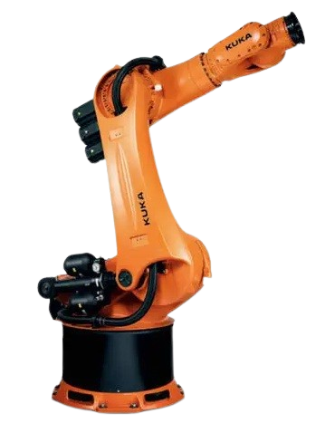

Robôs industrias
Robôs industriais são máquinas programáveis usadas em fábricas para executar tarefas repetitivas com alta precisão e velocidade. Eles aumentam a produtividade, reduzem erros e operam, geralmente, de forma isolada por motivos de segurança. São aplicados em processos como montagem, soldagem, pintura e manuseio de materiais.
Adaptado de Robô Industrial
Os robôs produzem diversas funcôes e algumas delas podendo ser Montagem, Soldagem, pintura, Inspeção, Logística, Embalagem, Manuseio perigoso, Corte/Usinagem, Agronegócio e Indústria alimentícia.
Os robôs industriais utilizam o sistema operacional RTOS(sistemas em tempo real) ou ROS, podendo ser também sistemas proprietários dos fabricantes. Suas linguagens de programação, podendo ser elas Específicas: RAPID (ABB), KRL (KUKA), TPP (FANUC) ou Genéricas: Python, C/C++. Esses robôs geralmente possuem 6 graus de liberdade (6 DoF) permitindo 3 movimentos de posição (X, Y, Z) e 3 de orientação (rotação ao redor dos eixos). Alguns robôs mais simples têm 4 ou 5 DoF, enquanto robôs avançados podem ter 7 ou mais DoF para maior flexibilidade.
Os robôs industriais aumentam a produtividade, a precisão e a segurança nas fábricas, realizando tarefas repetitivas com rapidez e eficiência. No entanto, apresentam desvantagens como alto custo inicial, pouca flexibilidade, necessidade de mão de obra qualificada para manutenção e possível impacto negativo no emprego humano.